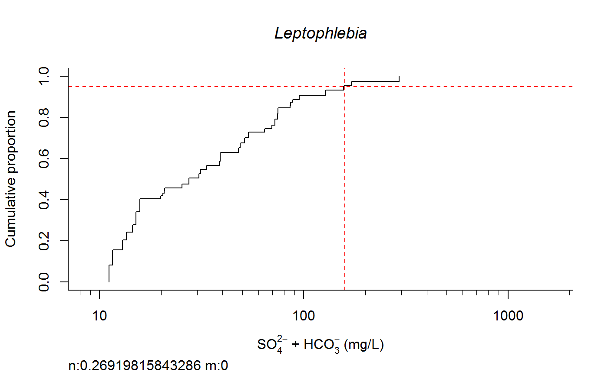
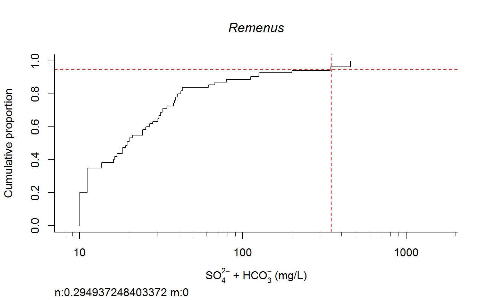
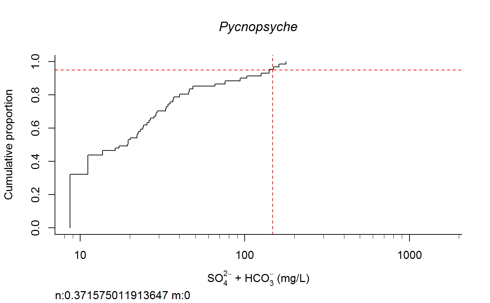
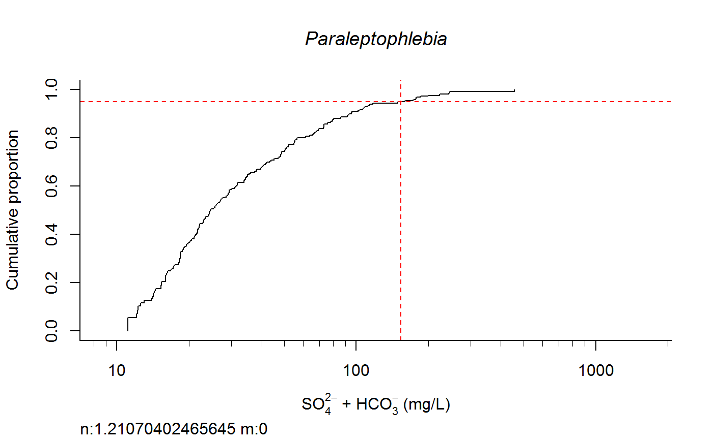
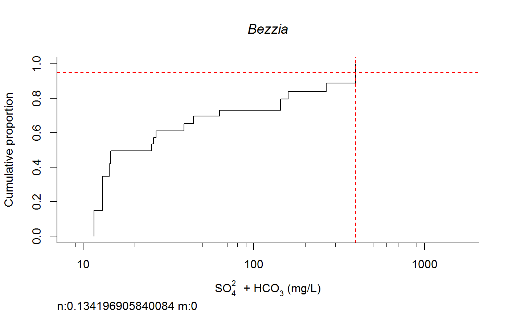

R/taxon.response.sort.r
taxon.response.sort.RdThe output of this function to return 1.Weighted Average, 2. cdf_Abundance based, 3. cdf_ presence/absence based; 4. ecdf weighted, 5. cdf weight new; 6. Linear logistic regression, 7. quadratic logistic 8. GAM 5~7 using full data range; 9~11. repeat 6~8 but uses observed range for each single taxon; 12 Count. 13. Raw quantiles. Requires Hmisc for wtd.quantile() and Ecdf() and mgcv to gam().
taxon.response.sort(df1 = df1, xvar = "Conductivity", cutoff = 25, region = "all", mtype = 3, dense.N = 201, plot.pdf = F, xlabs = "Specific conductivity (uS/cm)", add.map = FALSE, GIS.cord = c("LONG_DD", "LAT_DD"), extirpation = NULL, maintext = "Macroinvertebrates response to specific conductivity", log.x = TRUE, rounder = 0, taus = c(0, 95, 100), nbin = 61, sort.vect = sort.vect, wd = getwd())
| df1 | data frame |
|---|---|
| cutoff | a required minimum sample size for calculation |
| region | a subregion code to name the final output files |
| mtype | could be 1 to 3, indicating which regression model to use; default = 3. |
| dense.N | is the number of areas to cut into in the calculation of area under the curve |
| plot.pdf | to decide if we want species vs. env plots options "none", "pdf", "tiff" |
| add.map | to decide if a map should be added before plots. |
| maintext | title of the multiplots area |
| log.x | if xvar should be logtransformated |
| rounder | xvar rounder, default = 0 |
| taus | determine the output the percentile of env variable |
| nbin | number of bins for logits |
| sort.vect | when plot, sort the taxa list according to a vector called file called sort.vec |
| wd | Working directory for saving files. |
| xvar. | xvariable, could be column index or name |
Output to the screen for each taxon as it is completed. CDF and GAM plots are saved to the specified directory in subfolders ("cdf" and "gam"). 1.Weighted Average, 2. cdf_Abundance based, 3. cdf_ presence/absence based; 4. ecdf weighted, 5. cdf weight new; 6. Linear logistic regression, 7. quadratic logistic 8. GAM 5~7 using full data range; 9~11. repeat 6~8 but uses observed range for each single taxon; 12 Count. 13. Raw quantiles
switch0 <- 1 ecolab <- ifelse (switch0 ==1, "eco69", "eco70") unitlab <- expression(paste("SO"[4]^{2-phantom()}," + HCO"[3]^{-phantom()}," (mg/L)")) full.results <- taxon.response.sort(df1 = df1, xvar = "lgSO4HCO3", cutoff = 25, region = ecolab , mtype = 3, dense.N = 201, plot.pdf = T, xlabs = unitlab, add.map = F, , maintext = "" , GIS.cord = c("Long_DD", "Lat_DD"), log.x = TRUE, rounder = 0, taus = c(0,95,100), nbin = 61, sort.vect = taxalist , wd=getwd())#> [1] 1#> [1] 2#> [1] 3#> [1] 4#> [1] 5#> [1] 6#> [1] 7#> [1] 8#> [1] 9#> [1] 10#> [1] 11#> [1] 12#> [1] 13#> [1] 14#> [1] 15#> [1] 16#> [1] 17#> [1] 18#> [1] 19#> [1] 20#> [1] 21#> [1] 22#> [1] 23#> [1] 24#> [1] 25#> [1] 26#> [1] 27#> [1] 28#> [1] 29#> [1] 30#> [1] 31#> [1] 32#> [1] 33#> [1] 34#> [1] 35#> [1] 36#> [1] 37#> [1] 38#> [1] 39#> [1] 40#> [1] 41#> [1] 42#> [1] 43#> [1] 44#> [1] 45#> [1] 46#> [1] 47#> [1] 48#> [1] 49#> [1] 50#> [1] 51#> [1] 52#> [1] 53#> [1] 54#> [1] 55#> [1] 56#> [1] 57#> [1] 58#> [1] 59#> [1] 60#> [1] 61#> [1] 62#> [1] 63#> [1] 64#> [1] 65#> [1] 66#> [1] 67#> [1] 68#> [1] 69#> [1] 70#> [1] 71#> [1] 72#> [1] 73#> [1] 74#> [1] 75#> [1] 76#> [1] 77#> [1] 78#> [1] 79#> [1] 80#> [1] 81#> [1] 82#> [1] 83#> [1] 84#> [1] 85#> [1] 86#> [1] 87#> [1] 88#> [1] 89#> [1] 90#> [1] 91#> [1] 92#> [1] 93#> [1] 94#> [1] 95#> [1] 96#> [1] 97#> [1] 98#> [1] 99#> [1] 100#> [1] 101#> [1] 102#> [1] 103#> [1] 104#> [1] 105#> [1] 106#> [1] 107#> [1] 108#> [1] 109#> [1] 110#> [1] 111#> [1] 112#> [1] 113#> [1] 114#> [1] 115#> [1] 116#> [1] 117#> [1] 118#> [1] 119#> [1] 120#> [1] 121#> [1] 122#> [1] 123#> [1] 124#> [1] 125#> [1] 126#> [1] 127#> [1] 128#> [1] 129#> [1] 130#> [1] 131#> [1] 132#> [1] 133#> [1] 134#> [1] 135#> [1] 136#> [1] 137#> [1] 138#> [1] 139#> [1] 140#> [1] 141#> [1] 142